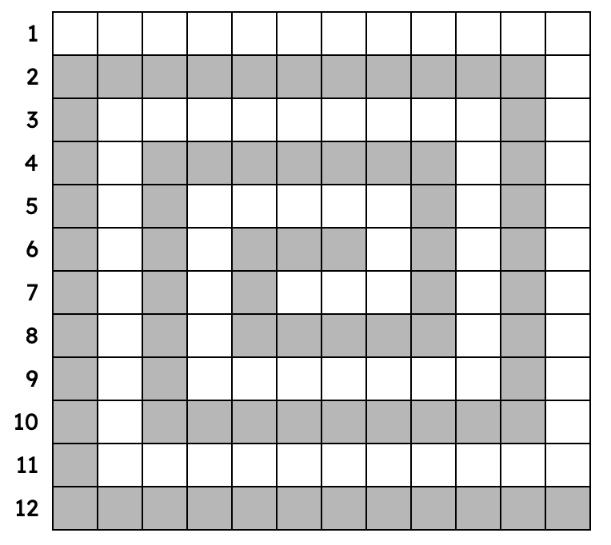

A whirlwind puzzle is a variant on the Marching Bands puzzle, invented by Mike Shenk. Instead of entering answers in rows and concentric bands, answers are entered in rows and in two long, winding paths. Answers in rows and in bands are clued in order. When you're finished, all the letters in the grid will be used by one Row answer and one Path answer.
As you make your way inward, you sense an eerie silence, as if the winds have ceased to be.

[Hey copy-to-clipboard user! So, the copy to clipboard function is being quite bad at preserving background coloring and cell properties when pasting, and I want to get this puzzle out there before midnight, so you're gonna have to plot out the grid yourself for now. Sorry about that, but hopefully I can fix this later! - Paolo]
(3) (4)
(3) (1)
(7) (4)
(5) (6)
(2) (5)
ROWS
"Doctor Who" object that's bigger on the inside Pamper
Old witch Insurance company that somehow got licensing rights for Snoopy
Affliction for someone carrying an Epi-Pen Villainous count in "The Princess Bride"
Hit with a focused beam of light Japanese art of gold joinery
Drink made of grapes that froze on the vine (2 wds.) "An American In Paris" actress Leslie
Sinuous swimmers String that identifies a file's location (2 wds.)
["I'm a dog!"] Smart devices made by Ring
North African stew traditionally prepared in a clay pot Some coffeehouse orders
Japanese mushrooms "Rare and radiant maiden" in a Poe poem
Bill with Abe Lincoln, casually City that Jonah tries to avoid, in the Bible
Casserole-esque dish that may be eaten straight out of a chip bag (2 wds.) Product presentation, for short
Paint remover "QI" host Toksvig
LIGHT PATH (inwards)
2022 movie featuring Cate Blanchett as an orchestra conductor
Character who says "I'd celebrate, but I have Saturday Night Fever," in The Simpsons: Tapped Out (2 wds.)
In which 100 is a hundred (instead of, like, four or nine) (2 wds.)
Legalese term for "existing" (2 wds.)
Concern for an interior designer (2 wds.)
Nasal irrigation device (2 wds.)
Youngest sister in "Three Sisters"
Person remembering things, or a company pulling products from the shelves
Two-wheeled automobile
First, as in a yearly series
Hot ___ (mall store for people who wear shirts that say, like, NORMAL IS JUST A SETTING ON A DRYER)
Sanders (of food) and Mustard (surprisingly, not of food), for two
"Just yankin' your chain" (2 wds.)
Porcine name for H1N1 (2 wds.)
Guy who's likely to corner you at a party and talk about crypto (2 wds.)
DARK PATH (outwards)
Select, as a phone app's icon (2 wds.)
Make really, really, really happy
Political cartoonist Thomas
Brand that's trademarked the "Jumpman" logo
Have one's own political authority (hyph.)
"How rude!" (2 wds.)
"Don't worry everybody! ___ and Zoe practiced sharing and are still best buds forever! ___ loves you Zoe! Ha ha ha! ___ doesn't want to talk about Rocco." (tweet from a puppet)